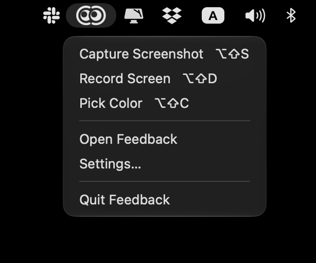
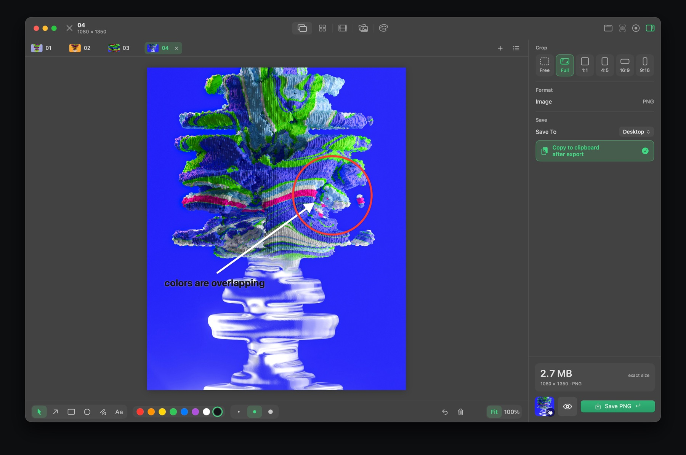
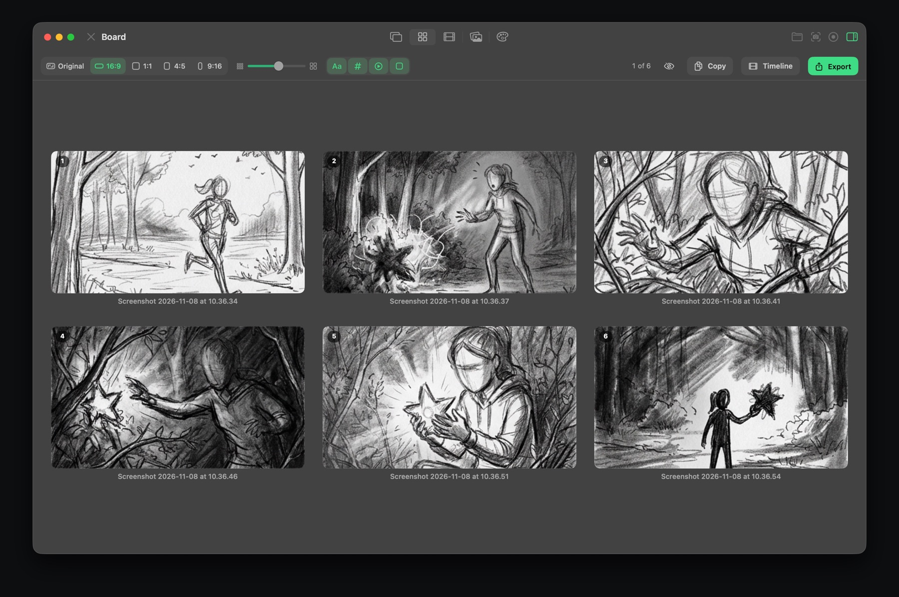
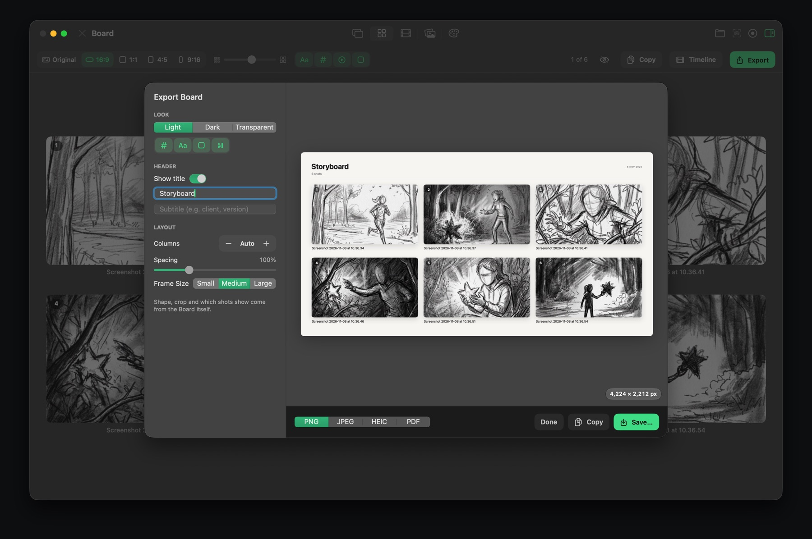
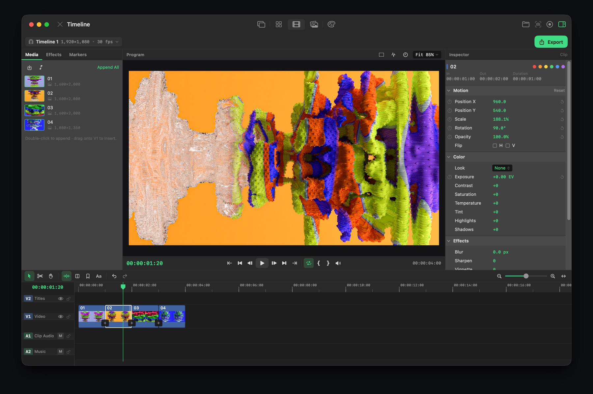
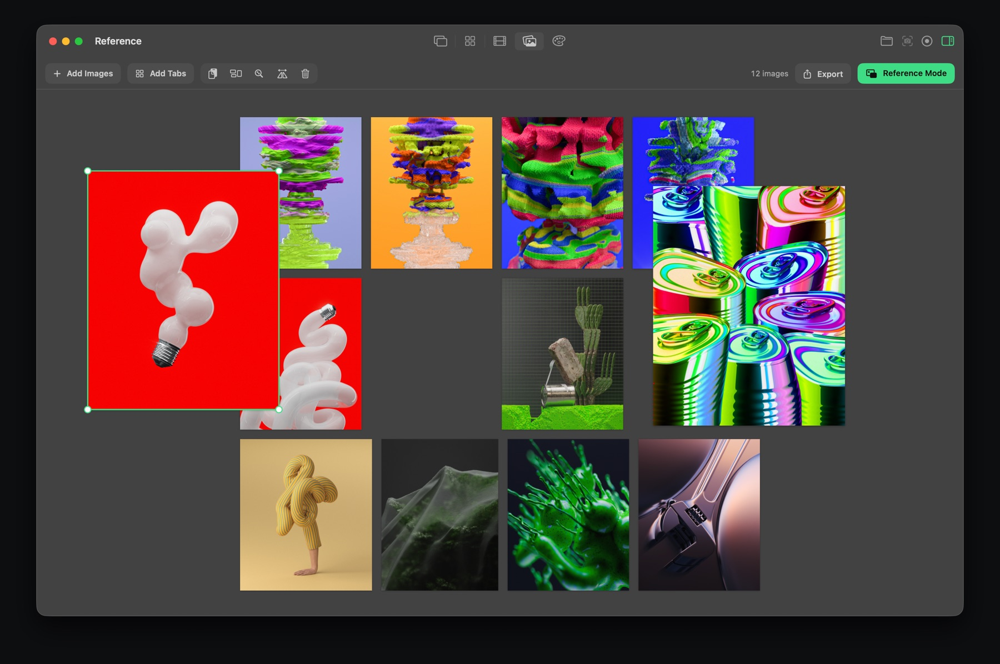
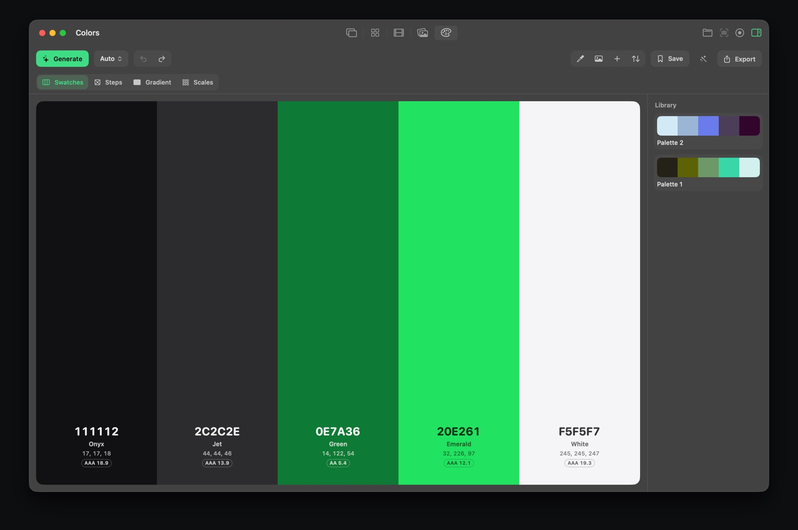

Getting started
Feedback is one window with five sections, switched from the control at the top: Review, Board, Timeline, Reference and Colors. You can also jump between them with ⌥⌘1 to ⌥⌘5.

The app also lives in your menu bar, so its shortcuts keep working even with no window open. From the menu bar icon you can capture a screenshot, record the screen, pick a color, or open the app.
The first time you capture
macOS asks for permission to record the screen. Turn on Feedback in System Settings › Privacy & Security › Screen & System Audio Recording, then reopen the app. Screenshots and recordings both need this.
Opening your own files
Drag images or videos onto the window, or use ⌘O. Each file opens in its own tab.
Screenshots
Press ⌥⇧S from any app (or click the camera button in the toolbar) and drag over the area you want.
A small preview appears in the corner. Click it to open the shot, or drag it straight into another app. Hovering keeps it on screen.
In Settings › Capture you choose what happens next:
- Open in Editor: the shot opens in Review, ready to mark up.
- Save and Copy Right Away: it's saved and on your clipboard immediately, without opening the app.
- Copy Right Away: every capture goes to the clipboard, whichever option you pick.
- Preview Stays For: how long the corner preview shows, from 2 seconds to until clicked.
Save with Return or ⌘E. Screenshots are saved as PNG to your Desktop, Downloads, or next to the original file. With Copy to clipboard after export on, every saved file is also copied, so it pastes as an image in Figma and as a file in Slack or Mail.
Marking up

The tools sit in the bar below the image. Each has a one-letter shortcut:
| Key | Tool |
|---|---|
| V | Select & Crop: move, resize or delete marks, and crop the image. |
| P | Pen: draw freehand. |
| A | Arrow PRO |
| R | Rectangle PRO |
| C | Circle PRO |
| T | Text, plain or on a background PRO |
Choose from eight colors and three line sizes. The free version draws in red at the middle size; Pro unlocks every color and size.
Select a mark and press Delete to remove it, or Esc to deselect. ⌘Z undoes.
Cropping
Drag the edges of the image for a free crop, or pick a fixed shape: Original, 1:1, 4:5, 16:9 or 9:16 (⌘1 to ⌘6). Fixed shapes are PRO.
Screen recording
Press ⌥⇧D (or the record button) and choose the area. Press the same shortcut again to stop. The recording opens in Review, where you can trim it, mark it up and export it as a GIF or a video.
Video to GIF

Open any video, or record one, and it plays in Review with a trimmer underneath.
Playing and trimming
- Space plays and pauses. ← → step one frame, with ⇧ for ten.
- Drag the trimmer's yellow edges, or press I and O to set the start and end at the playhead. PRO
- S takes a snapshot of the current frame into a new tab.
Export settings
The panel on the right sets up the file:
- Format: GIF, MP4 (H.264, small files) or MOV (ProRes, no visible compression).
- Quality: Small, Balanced or High.
- Size: the longest side in pixels, or full size.
- Frame Rate and Speed.
The estimated file size updates as you change things, so you can hit a size limit before exporting. Q previews the export quality in the player.
MP4 and MOV keep the original sound, matched to your trim and speed. GIFs have no sound.
Finder action

Right-click one or more videos in Finder and choose Quick Actions › Convert to GIF. The GIF is made in the background and saved next to the video, using your quality and size settings from the app. You don't need to open Feedback.
Board PRO

Board shows every open tab as a numbered frame, so your screenshots become a storyboard.
- Drag frames to reorder them. The numbers follow.
- Hide frames you don't need with H, without closing them.
- Set the frame shape (Original, 16:9, 1:1, 4:5 or 9:16), the size, names on or off, a dark background, rounded corners and play icons on videos.
- Copy puts the selected frames on the clipboard. Timeline sends them to the Timeline in order.
Exporting the board

Export opens a preview where you choose a light, dark or transparent look, a title and subtitle, the number of columns, spacing and frame size. Save it as PNG, JPEG, HEIC or PDF, or copy it.
Timeline PRO

Timeline is a small video editor for animatics, demos and edits made from your shots. Open it from Board, or switch to it and it starts with your open tabs.
Building an edit
- Drag media from the pool on the left onto the video track. Stills get a length you can change; videos keep their trim.
- Drop audio files onto the timeline to add music, with a volume per clip.
- Tools: Select V, Blade B and Hand H. Split at the playhead with S or ⌘K.
- Copy, paste and duplicate clips with ⌘C, ⌘V and ⌘D. Delete removes the selection.
Transitions, titles and text
- Transitions: Crossfade, Fade, Dip to White, Push, Slide Up, Wipe, Zoom and Blur. Set one for the whole edit or per clip.
- T adds a title card. ⇧T adds a caption on top of the picture. Text overlays come as Lower Third, Caption, Label or Subtitle.
- Stills and titles can slowly zoom in or out, or pan left or right.
Look and animation
- Looks: Vivid, Warm, Cool, Faded, Instant, Mono and Noir, plus exposure, contrast, saturation, temperature, tint, highlights, shadows, sharpen, blur and vignette.
- Copy a clip's look to others with ⌥⌘C and ⌥⌘V.
- Keyframe scale, position, rotation, opacity and exposure, with Linear, Ease, Ease In, Ease Out or Hold between keys, and a graph to shape the motion.
Playback and review
- Space plays. J K L play backwards, stop and play forwards; press again to go faster.
- ↑ ↓ jump between cuts. Home and End go to the start and end.
- M adds a marker. I and O set a range; X clears it. N turns snapping on or off.
Exporting
Export the whole edit, or just the In to Out range, as GIF, MP4 or MOV. You can burn in a timecode or frame number in a corner of your choice, which is handy for reviews.
Reference PRO

Reference is a free-form board for inspiration. Drop images in, then move and resize them however you like. You can also send shots to it from any tab.
Reference mode
⌥⌘R turns the board into a floating window that stays above every app, so your references are always in view while you draw, design or edit. Set its opacity, and turn on Let Clicks Pass Through to work on the app underneath it. Clicking Feedback's Dock icon turns click-through off again.
Exporting
Export the board as one image: as arranged, as a tidy grid or as a single row, in a light, dark or transparent look, with a title and margin, at 2K to 8K.
Colors PRO

Colors builds palettes from your screen, your images or from scratch.
- Space generates a new palette. Choose the harmony: Auto, Analogous, Monochrome, Complementary, Split Complementary, Triadic or Square.
- Lock colors you like and they stay when you generate again.
- Pick any color on screen with ⌥⇧C from any app (it also copies the hex code), or P inside Colors.
- Pull a palette from an image by dropping it on Colors, or with Send To › Colors on a tab.
- Each color shows its name, HEX, RGB, HSL, OKLCH and CMYK, plus a contrast rating for text.
- ← → undo and redo, C copies the hex codes and S saves the palette to your library.
Views
Swatches (your palette), Steps (even steps between colors), Gradient (a smooth blend sampled into colors) and Scales (every color as a 50–950 scale, like a design system).
Exporting
- Images: strips, cards, dots, a color sheet, a gradient, a poster and a scale grid.
- Code: HEX list, CSS variables, Sass, Tailwind config, JSON, design tokens (Figma, Tokens Studio) and a SwiftUI Color extension.
- Swatch files: SVG, Adobe .ase (Photoshop, Illustrator, InDesign, Affinity) and .gpl (GIMP, Krita, Inkscape, Aseprite).
Projects & tabs
- Each screenshot, recording or file opens in its own tab. Drag tabs to reorder them. ⇧⌘] and ⇧⌘[ move between them, and ⌘W closes one.
- Closing a tab also removes its clips from the Timeline.
- Send To on a tab moves it to the Timeline, Reference or Colors.
- Save everything (tabs, marks, Board, Timeline and Reference) as one project file with ⌘S, and open it again later with ⌘O. Quick captures never ask you to save.
Settings
- General: show in menu bar, open at login, where files are saved, and copy after saving.
- Capture: what happens after a capture, and how long the corner preview stays.
- Shortcuts: change the three global shortcuts, or reset them.
- Privacy: the permissions Feedback uses.
- Pro: your trial or Pro status, and Restore Purchases.
Free and Pro
Free: screenshots, screen recording, video to GIF and MP4 (with a small watermark on GIFs and videos), the Finder action, the red pen, free cropping and Original size.
Feedback Pro is a one-time purchase that adds arrows, shapes, text, every color and line size, trimming, fixed crop shapes, Board, Timeline, Reference, Colors, and exports without the watermark. No subscription.
The 7-day trial unlocks everything for free and ends by itself. If you've bought Pro before, use Settings › Pro › Restore on a new Mac.
Keyboard shortcuts
Anywhere on your Mac
| ⌥⇧S | Capture a screenshot |
| ⌥⇧D | Start or stop a screen recording |
| ⌥⇧C | Pick a color from the screen |
In the app
| ⌥⌘1–⌥⌘5 | Review, Board, Timeline, Reference, Colors |
| ⌥⌘R | Reference mode |
| ⌥⌘0 | Show or hide the settings panel |
| ⌘O / ⌘S | Open / save a project |
| ⌘E or Return | Export the current tab |
| ⌘9 / ⌘0 | Zoom to fit / actual size |
Review
| V P A R C T | Select, Pen, Arrow, Rectangle, Circle, Text |
| ⌘1–⌘6 | Crop shapes |
| Space | Play / pause a video |
| ← → | Step a frame (⇧ for ten) |
| I / O | Trim start / end at the playhead |
| S | Snapshot the frame into a new tab |
| Q | Preview export quality |
Timeline
| Space, J K L | Play, and shuttle back / stop / forward |
| V B H | Select, Blade, Hand |
| S or ⌘K | Split at the playhead |
| T / ⇧T | Title card / caption |
| M | Add a marker |
| I O X | Set In, set Out, clear the range |
| ↑ ↓ | Previous / next cut |
| N | Snapping on / off |
| ⌘C ⌘V ⌘D | Copy, paste, duplicate |
| ⌥⌘C / ⌥⌘V | Copy / paste a clip's look |
Colors
| Space | Generate a palette |
| ← → | Undo / redo |
| P | Pick a color from the screen |
| C | Copy the hex codes |
| S | Save to the library |
How-to articles
Something missing or unclear? Email feedback.contact@icloud.com.